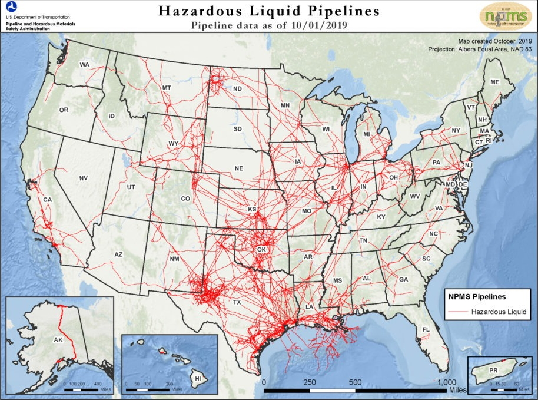

US Pipeline Incidents
According to the Pipeline and Hazardous Materials Safety Administration (PHSMSA),
the agency that monitors the nation's pipeline system,
there are approximately 2.6 million miles of pipeline transportation. Of these
millions of pipelines, almost 219,000 miles are oil, refined products and natural
gas liquid pipe petroleum pipelines traverse the United States, connecting producing
areas to refineries and chemical plants and delivering to consumers and businesses.
The first map to the left shows this extensive US pipeline system that maps across Alaska, tap Oahau,
Hawaii, spans coast to coast, and into the gulf. PHSMSA cites that over one million
hazardous materials are shipped by land, sea, and air every day”.
The map below the first map is an interactive map charting individual leak or spill incidents
reported to PHMSA.
